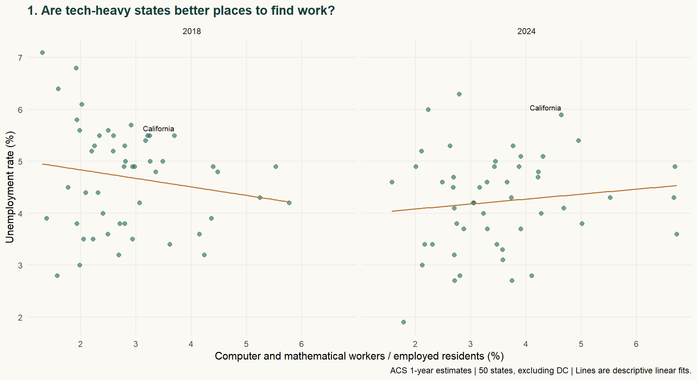
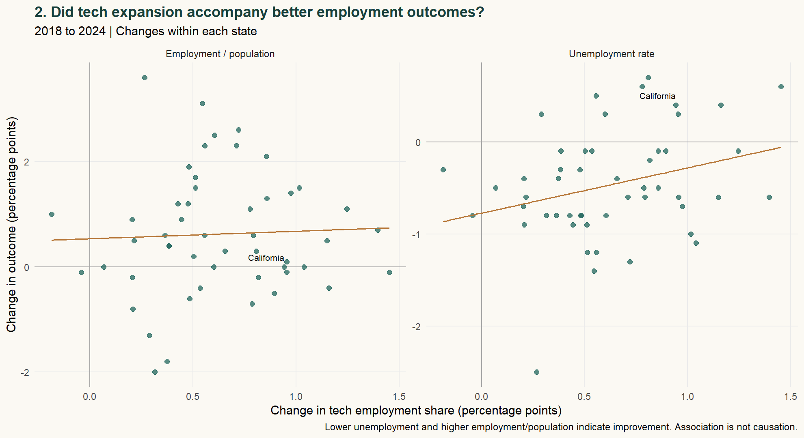
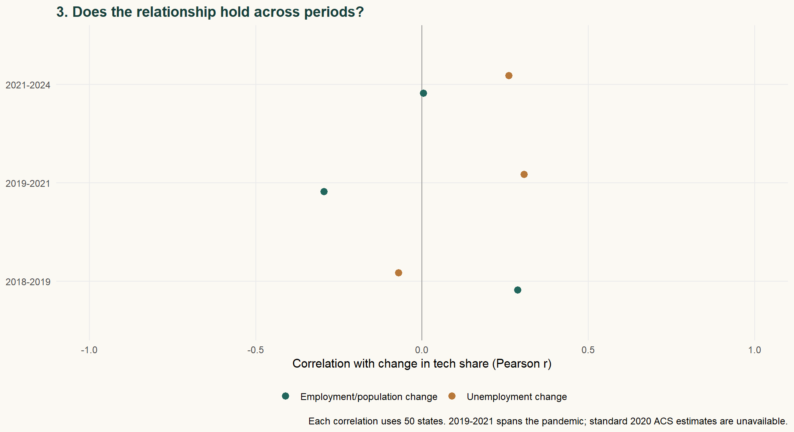
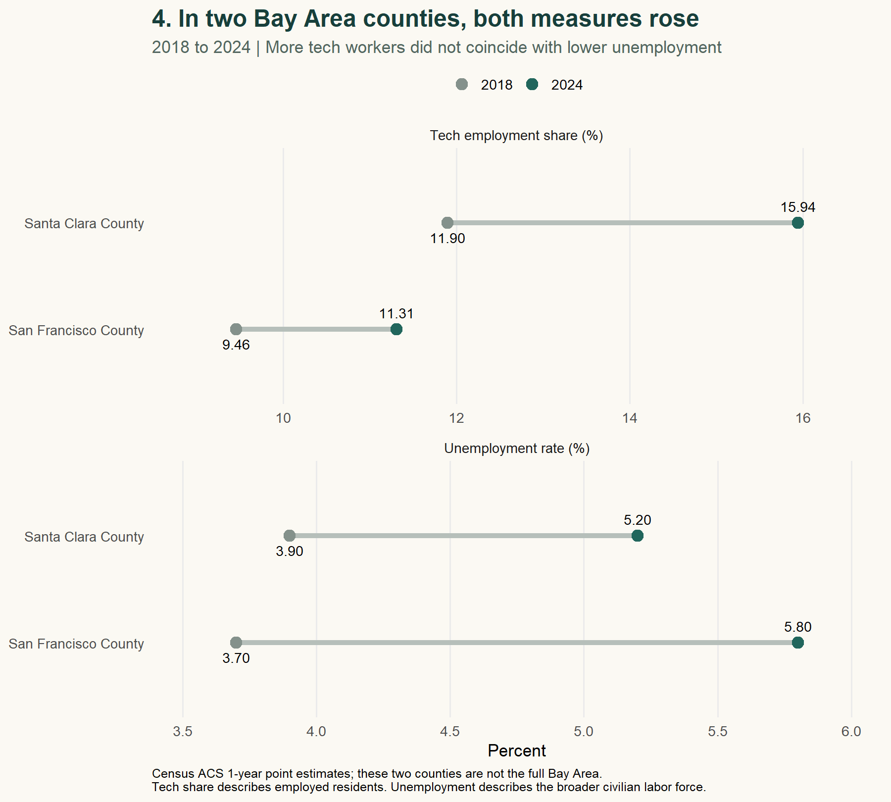
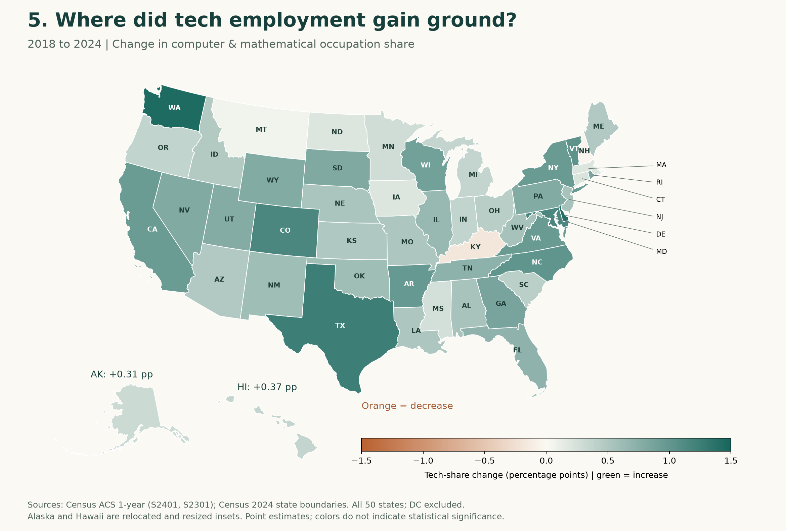
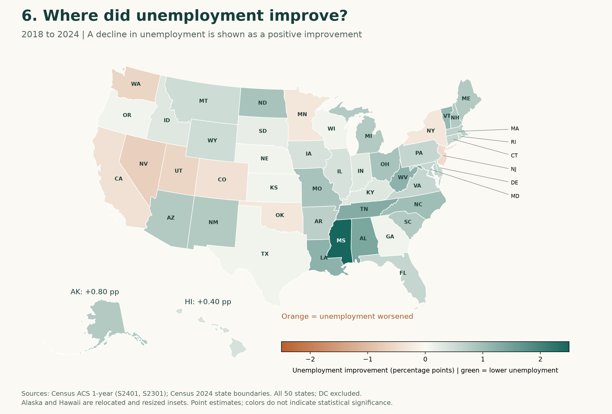

More Tech, Better Jobs?
What changes across U.S. states reveal—and what two Bay Area counties add
BLOG 4 · TECHNOLOGY AND LOCAL LABOR MARKETS
Tech employment share rose in 48 of 50 states between 2018 and 2024. That expansion did not come with a consistent improvement in broader employment outcomes.
Tech employment and the wider labor market
Does a growing share of workers in computer and mathematical occupations go together with better employment outcomes for a state’s residents? Growth in these occupations could accompany stronger labor demand, but unemployment also depends on how labor supply and the rest of the economy change. A larger tech workforce alone does not settle the question.
I compare changes in occupational shares, unemployment, and employment/population ratios across all 50 states from 2018 to 2024, using six available years of ACS data. I then examine San Francisco and Santa Clara counties to see how these two parts of the Bay Area fit the national pattern.
Measure what the data actually observe
The source is the Census Bureau’s American Community Survey (ACS) 1-year estimates, tables S2401 and S2301. I define tech concentration as the share of employed residents age 16 and older in computer and mathematical occupations. This transparent proxy captures an occupational mix—not technological sophistication, patents, all STEM work, or AI adoption.
Two outcomes describe the wider labor market: unemployment and the employment/population ratio. Lower unemployment is encouraging, but it can also reflect people leaving the labor force; a higher employment/population ratio provides a complementary perspective.
The panel covers 2018, 2019, and 2021–2024: 300 state-year observations, plus 12 county-year observations. DC is retained in the download but excluded from the 50-state comparisons. I start after the 2018 occupation-classification revision and omit 2020 because Census did not release standard 1-year estimates. Each state receives equal weight; published ACS estimates already use survey weights.
Where did tech employment expand?
Figure 1 ranks the ten states with the largest increases in tech employment share. Washington, Delaware and Texas lead this comparison. The broader shift was widespread: 48 of 50 states recorded an increase. This establishes where the occupational mix changed, but says nothing yet about whether employment conditions improved.

Follow the changes
Figure 2 subtracts each state’s 2018 value from its 2024 value. A one-point increase means, for example, moving from 3% to 4% tech employment—not a 1% increase in the number of tech workers.
In both panels, higher values on the vertical axis indicate improvement: lower unemployment in the first and a higher employment/population ratio in the second. Across states, larger increases in tech employment share are associated with less improvement in unemployment (r = −0.29). The correlation with employment/population improvement is close to zero (r = +0.04). The two measures provide little evidence of a consistent positive association over this period.
This is not simply California driving the pattern: excluding it gives correlations of −0.27 and +0.05, respectively. Rank correlations also preserve the broad interpretation. I checked the denominator, too: every state with a rising tech share also had an increase in its estimated number of tech workers. Their shares did not rise solely because other employment contracted.

Timing changes the story
For each period, Figure 3 ranks states by the change in tech employment share and compares the 13 states at each end of the ranking. Each bar is an equally weighted mean change in the relevant employment outcome. The middle 24 states are excluded from this particular comparison.
In 2018–2019, the faster-tech group improved more on both measures. In 2019–2021 it deteriorated more. During 2021–2024, unemployment fell 1.24 points in the faster-tech group versus 1.70 in the slower group, while employment/population gains were similar (1.80 versus 1.72 points). Faster tech growth did not bring a consistent advantage.
Groups change across periods; these are equal-weight descriptive averages, not matched comparisons. Periods also differ in length. The 2019–2021 interval spans the pandemic and cannot isolate its initial shock.

San Francisco and Santa Clara counties
Santa Clara County’s tech share rose from 11.90% to 15.94%, while its ACS unemployment rate rose from 3.9% to 5.2%. San Francisco County also recorded increases in both. These fixed county boundaries offer a local comparison without treating California as the Bay Area; the two counties do not represent the full nine-county region.

Put the changes on the map
The maps add a geographic view of the same 50-state comparison. Washington and Texas show relatively large tech-share gains, but their unemployment outcomes differ. California also gains tech share while its unemployment rate rises. The two patterns do not line up into a simple geography of technology-led improvement.


Read each legend separately: the color scales differ because the measures have different ranges. Large states occupy more space, not more statistical weight. Boundaries come from the Census 2024 cartographic boundary files; state FIPS codes link geography to the analysis.
What the state comparisons show
Across these 50 states from 2018 to 2024, a larger increase in the share of residents working in computer and mathematical occupations was not consistently associated with better employment outcomes. The period comparisons also give mixed results. I would therefore treat growth in this occupational share as evidence of a changing employment mix; assessing the wider labor market still requires looking at unemployment and employment/population together.
These are descriptive associations, not causal effects. Migration, age structure, education, other industries and common shocks may influence both variables. ACS sampling error also matters, especially for counties and small changes; the download retains published margins of error, but the charts show point estimates and make no significance claims. Residence-based estimates—including remote workers—do not measure jobs located in local offices.
Sources and replication
Census ACS API: S2401 occupation counts and S2301 employment indicators; 2018 comparability guidance; 2020 release limitation. Data retrieved October 4, 2026. ACS rates are not interchangeable with the monthly BLS headline unemployment series.
Download the reproducibility package: source responses, analysis scripts, figures and README. No API key is included.